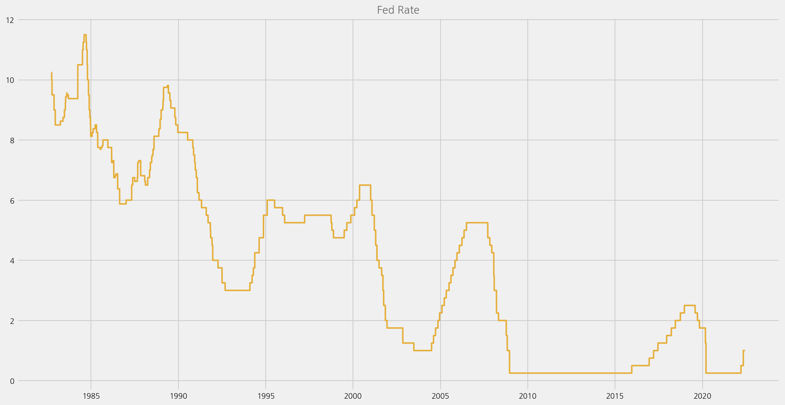
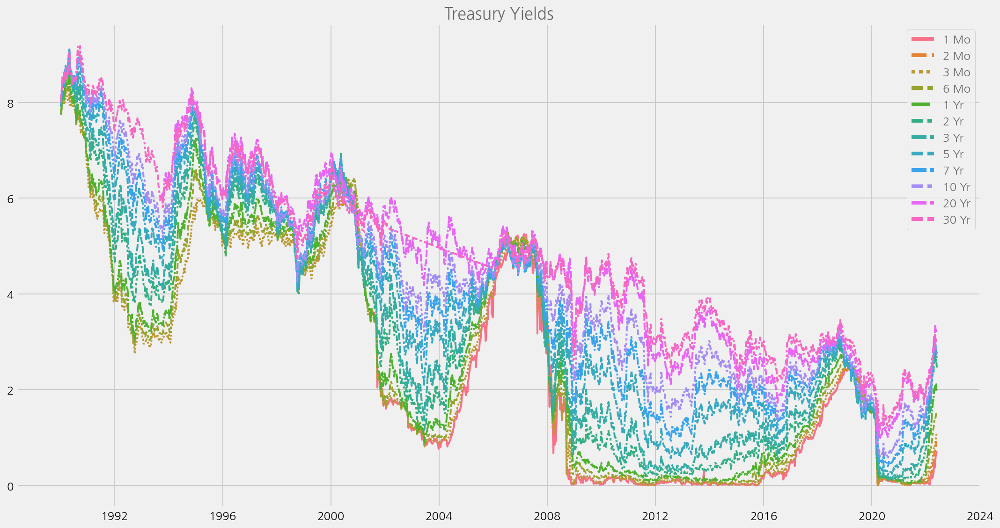
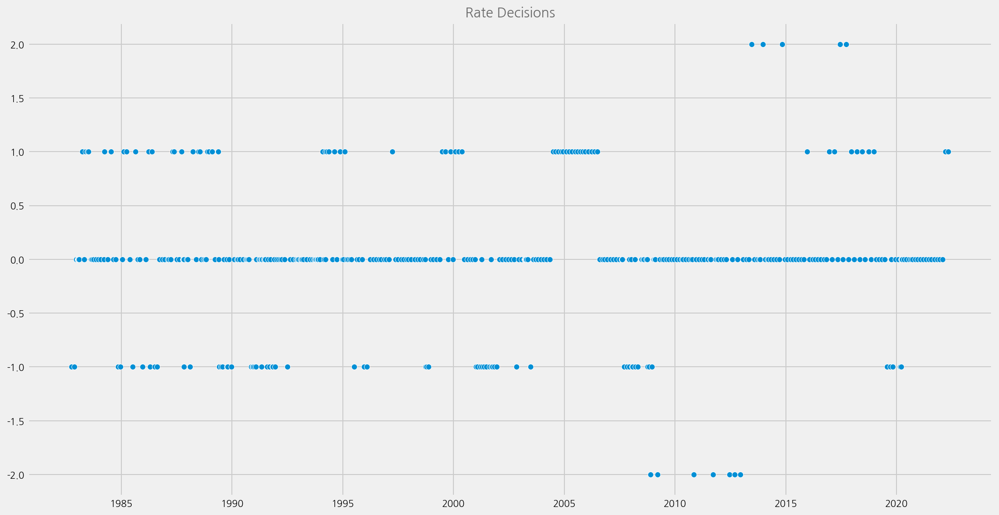
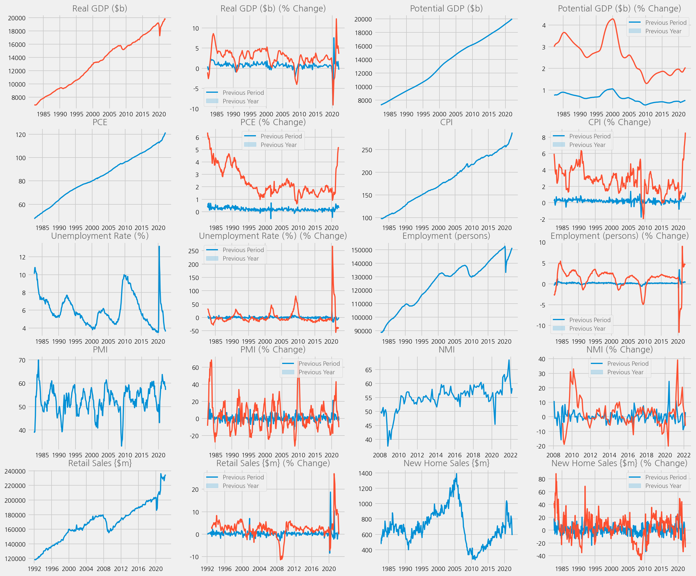
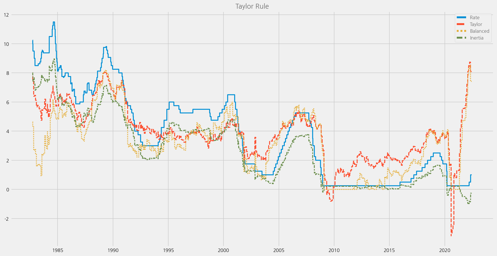

Preparing Numerical Data
Contents
Preparing Numerical Data#
Note
Install ekorpkit package first. Set logging level to Warning, if you don’t want to see verbose logging,
%config InlineBackend.figure_format='retina'
import logging
from ekorpkit import eKonf
logging.basicConfig(level=logging.WARNING)
print(eKonf.__version__)
0.1.33+20.g8433774.dirty
data_dir = "../data/fomc"
Load FOMC class#
cfg = eKonf.compose("io/fetcher/fomc")
cfg.output_dir = data_dir
fomc = eKonf.instantiate(cfg)
print(fomc)
<ekorpkit.io.fetch.fomc.base.FOMC object at 0x7f6b4a296820>
Chairpersons#
fomc.chairpersons
| last_name | first_name | from_date | to_date | |
|---|---|---|---|---|
| 0 | Volcker | Paul | 1979-08-06 | 1987-08-10 |
| 1 | Greenspan | Alan | 1987-08-11 | 2006-01-31 |
| 2 | Bernanke | Ben | 2006-02-01 | 2014-01-31 |
| 3 | Yellen | Janet | 2014-02-03 | 2018-02-03 |
| 4 | Powell | Jerome | 2018-02-05 | 2022-06-26 |
Load Calendar#
fomc.load_calendar(from_year=1982, force_download=False)
| unscheduled | forecast | confcall | speaker | rate | rate_change | rate_decision | rate_changed | |
|---|---|---|---|---|---|---|---|---|
| date | ||||||||
| 1982-10-05 | False | False | False | Paul Volcker | 9.50 | -0.50 | -1.0 | 1 |
| 1982-11-16 | False | False | False | Paul Volcker | 9.00 | -0.50 | -1.0 | 1 |
| 1982-12-21 | False | False | False | Paul Volcker | 8.50 | 0.00 | 0.0 | 0 |
| 1983-01-14 | False | False | True | Paul Volcker | 8.50 | 0.00 | 0.0 | 0 |
| 1983-01-21 | False | False | True | Paul Volcker | 8.50 | 0.00 | 0.0 | 0 |
| ... | ... | ... | ... | ... | ... | ... | ... | ... |
| 2021-11-03 | False | False | False | Jerome Powell | 0.25 | 0.00 | 0.0 | 0 |
| 2021-12-15 | False | True | False | Jerome Powell | 0.25 | 0.00 | 0.0 | 0 |
| 2022-01-26 | False | False | False | Jerome Powell | 0.25 | 0.00 | 0.0 | 0 |
| 2022-03-16 | False | True | False | Jerome Powell | 0.50 | 0.25 | 1.0 | 1 |
| 2022-05-04 | False | False | False | Jerome Powell | 1.00 | 0.50 | 1.0 | 1 |
415 rows × 8 columns
fomc_calendar = fomc.calendar.copy()
fomc_calendar
| unscheduled | forecast | confcall | speaker | rate | rate_change | rate_decision | rate_changed | |
|---|---|---|---|---|---|---|---|---|
| date | ||||||||
| 1982-10-05 | False | False | False | Paul Volcker | 9.50 | -0.50 | -1.0 | 1 |
| 1982-11-16 | False | False | False | Paul Volcker | 9.00 | -0.50 | -1.0 | 1 |
| 1982-12-21 | False | False | False | Paul Volcker | 8.50 | 0.00 | 0.0 | 0 |
| 1983-01-14 | False | False | True | Paul Volcker | 8.50 | 0.00 | 0.0 | 0 |
| 1983-01-21 | False | False | True | Paul Volcker | 8.50 | 0.00 | 0.0 | 0 |
| ... | ... | ... | ... | ... | ... | ... | ... | ... |
| 2021-11-03 | False | False | False | Jerome Powell | 0.25 | 0.00 | 0.0 | 0 |
| 2021-12-15 | False | True | False | Jerome Powell | 0.25 | 0.00 | 0.0 | 0 |
| 2022-01-26 | False | False | False | Jerome Powell | 0.25 | 0.00 | 0.0 | 0 |
| 2022-03-16 | False | True | False | Jerome Powell | 0.50 | 0.25 | 1.0 | 1 |
| 2022-05-04 | False | False | False | Jerome Powell | 1.00 | 0.50 | 1.0 | 1 |
415 rows × 8 columns
Load Market Data#
Target FED Rate#
cfg = eKonf.compose("io/fetcher=quandl")
cfg.series_name = "DFEDTAR"
cfg.series_id = ["DFEDTAR", "DFEDTARU"]
# cfg.force_download = True
quandl = eKonf.instantiate(cfg)
fedrates = quandl.data.copy()
fedrates
| DFEDTAR | series_id | |
|---|---|---|
| date | ||
| 1982-09-27 | 10.25 | DFEDTAR |
| 1982-09-28 | 10.25 | DFEDTAR |
| 1982-09-29 | 10.25 | DFEDTAR |
| 1982-09-30 | 10.25 | DFEDTAR |
| 1982-10-01 | 10.00 | DFEDTAR |
| ... | ... | ... |
| 2022-06-15 | 1.00 | DFEDTARU |
| 2022-06-16 | 1.75 | DFEDTARU |
| 2022-06-17 | 1.75 | DFEDTARU |
| 2022-06-18 | 1.75 | DFEDTARU |
| 2022-06-19 | 1.75 | DFEDTARU |
14511 rows × 2 columns
cfg = eKonf.compose('visualize/plot=lineplot')
# cfg.plot.x = "date"
cfg.plot.y = 'DFEDTAR'
cfg.figure.figsize = (15, 8)
cfg.ax.title = 'Fed Rate'
# eKonf.print(cfg)
eKonf.instantiate(cfg, data=fedrates)

Effective FED Rate#
dff = quandl.load(series_id="DFF")
dff
| DFF | |
|---|---|
| date | |
| 1954-07-01 | 1.13 |
| 1954-07-02 | 1.25 |
| 1954-07-03 | 1.25 |
| 1954-07-04 | 1.25 |
| 1954-07-05 | 0.88 |
| ... | ... |
| 2022-05-20 | 0.83 |
| 2022-05-21 | 0.83 |
| 2022-05-22 | 0.83 |
| 2022-05-23 | 0.83 |
| 2022-05-24 | 0.83 |
24800 rows × 1 columns
# Use every 30th row as it has too many data points
dff_30 = dff.iloc[::30, :]
print(dff_30.shape)
cfg = eKonf.compose('visualize/plot=lineplot')
cfg.plot.x = "date"
cfg.plot.y = "DFF"
cfg.figure.figsize = (15, 8)
cfg.ax.title = 'Effective FED Rate'
eKonf.instantiate(cfg, data=dff_30)
(827, 1)
Load Economic Indices#
import pandas as pd
from tqdm import tqdm
econ_indicators = {}
# quandl.force_download = True
for name, sr in tqdm(fomc.econ_series.items()):
econ_indicators[sr["name"]] = quandl.load(
series_id=sr["id"], series_name=sr["name"], expressions=sr["expressions"]
)
100%|██████████| 10/10 [00:00<00:00, 440.36it/s]
Treasury Yield#
Getting from US Treasury Site as xml#
import pandas as pd
treasury_yield_url = "https://home.treasury.gov/resource-center/data-chart-center/interest-rates/daily-treasury-rates.csv/all/all?type=daily_treasury_yield_curve&field_tdr_date_value=all&data=yieldAll&page&_format=csv"
treasury = pd.read_csv(treasury_yield_url)
treasury['Date'] = pd.to_datetime(treasury['Date'])
treasury.set_index('Date', inplace=True)
treasury
# Use every 5th row as it has too many data points
treasury_5 = treasury.iloc[::5, :]
cfg = eKonf.compose(config_group="visualize/plot=lineplot")
cfg.plot.y = list(treasury_5.columns)
cfg.figure.figsize = (15, 8)
cfg.ax.title = "Treasury Yields"
eKonf.instantiate(cfg, data=treasury_5)

Add Rate and Decisions#
fomc.add_decisions_to_calendar(fedrates)
fomc_calendar = fomc.calendar.copy()
fomc_calendar
100%|██████████| 427/427 [00:00<00:00, 1196.43it/s]
| unscheduled | forecast | confcall | speaker | rate | rate_change | rate_decision | |
|---|---|---|---|---|---|---|---|
| date | |||||||
| 1982-10-05 | False | False | False | Paul Volcker | 9.50 | -0.50 | -1.0 |
| 1982-11-16 | False | False | False | Paul Volcker | 9.00 | -0.50 | -1.0 |
| 1982-12-21 | False | False | False | Paul Volcker | 8.50 | 0.00 | 0.0 |
| 1983-01-14 | False | False | True | Paul Volcker | 8.50 | 0.00 | 0.0 |
| 1983-01-21 | False | False | True | Paul Volcker | 8.50 | 0.00 | 0.0 |
| ... | ... | ... | ... | ... | ... | ... | ... |
| 2021-11-03 | False | False | False | Jerome Powell | 0.25 | 0.00 | 0.0 |
| 2021-12-15 | False | True | False | Jerome Powell | 0.25 | 0.00 | 0.0 |
| 2022-01-26 | False | False | False | Jerome Powell | 0.25 | 0.00 | 0.0 |
| 2022-03-16 | False | True | False | Jerome Powell | 0.50 | 0.25 | 1.0 |
| 2022-05-04 | False | False | False | Jerome Powell | 1.00 | 0.50 | 1.0 |
414 rows × 7 columns
Though this is not perfect as Target Rate was sometimes changed between FOMC meetings, enough to analyze the impact of FOMC Meetings.
Add Quantitative Easing as a Lower event#
Between 2008 and 2016 saw zero interest rate. Main monetary measure shifted to quantity from rate. Thus, add “lower” events when those QE was announced.
fomc.add_unconventionals_to_calendar()
fomc_calendar = fomc.calendar.copy()
fomc_calendar
| unscheduled | forecast | confcall | speaker | rate | rate_change | rate_decision | rate_changed | |
|---|---|---|---|---|---|---|---|---|
| date | ||||||||
| 1982-10-05 | False | False | False | Paul Volcker | 9.50 | -0.50 | -1.0 | 1 |
| 1982-11-16 | False | False | False | Paul Volcker | 9.00 | -0.50 | -1.0 | 1 |
| 1982-12-21 | False | False | False | Paul Volcker | 8.50 | 0.00 | 0.0 | 0 |
| 1983-01-14 | False | False | True | Paul Volcker | 8.50 | 0.00 | 0.0 | 0 |
| 1983-01-21 | False | False | True | Paul Volcker | 8.50 | 0.00 | 0.0 | 0 |
| ... | ... | ... | ... | ... | ... | ... | ... | ... |
| 2021-11-03 | False | False | False | Jerome Powell | 0.25 | 0.00 | 0.0 | 0 |
| 2021-12-15 | False | True | False | Jerome Powell | 0.25 | 0.00 | 0.0 | 0 |
| 2022-01-26 | False | False | False | Jerome Powell | 0.25 | 0.00 | 0.0 | 0 |
| 2022-03-16 | False | True | False | Jerome Powell | 0.50 | 0.25 | 1.0 | 1 |
| 2022-05-04 | False | False | False | Jerome Powell | 1.00 | 0.50 | 1.0 | 1 |
415 rows × 8 columns
cfg = eKonf.compose("visualize/plot=scatterplot")
cfg.plot.y = "rate_decision"
cfg.figure.figsize = (15, 8)
cfg.ax.title = "Rate Decisions"
eKonf.instantiate(cfg, data=fomc_calendar)

econ_data = eKonf.load_data("econ_data.parquet", data_dir)
if econ_data is not None:
print(econ_data.tail())
unscheduled forecast confcall speaker rate rate_change \
date
2021-11-03 False False False Jerome Powell 0.25 0.00
2021-12-15 False True False Jerome Powell 0.25 0.00
2022-01-26 False False False Jerome Powell 0.25 0.00
2022-03-16 False True False Jerome Powell 0.50 0.25
2022-05-04 False False False Jerome Powell 1.00 0.50
rate_decision rate_changed GDP GDP_diff_prev ... \
date ...
2021-11-03 0.0 0 19478.893 0.570948 ...
2021-12-15 0.0 0 19478.893 0.570948 ...
2022-01-26 0.0 0 19478.893 0.570948 ...
2022-03-16 1.0 1 19806.290 1.680778 ...
2022-05-04 1.0 1 19735.895 -0.355417 ...
NMI_diff_year NMI_date RSALES RSALES_diff_prev \
date
2021-11-03 9.440559 2021-09-01 230078.0 0.573951
2021-12-15 20.422535 2021-11-01 231485.0 -0.098829
2022-01-26 7.972270 2021-12-01 226467.0 -2.167743
2022-03-16 1.073345 2022-02-01 233062.0 0.847674
2022-05-04 -6.270096 2022-03-01 234776.0 0.568863
RSALES_diff_year RSALES_date HSALES HSALES_diff_prev \
date
2021-11-03 8.474656 2021-09-01 732.0 6.705539
2021-12-15 10.977142 2021-11-01 756.0 12.667660
2022-01-26 9.101289 2021-12-01 839.0 10.978836
2022-03-16 9.076698 2022-02-01 792.0 -4.693141
2022-05-04 -0.034915 2022-04-01 591.0 -16.643159
HSALES_diff_year HSALES_date
date
2021-11-03 -26.135217 2021-09-01
2021-12-15 -11.163337 2021-11-01
2022-01-26 -3.673938 2021-12-01
2022-03-16 3.125000 2022-02-01
2022-05-04 -26.946848 2022-04-01
[5 rows x 48 columns]
econ_data = fomc_calendar.copy()
for name, sr in fomc.econ_series.items():
offset = sr["relativedelta"]
columns = [name, name + "_diff_prev", name + "_diff_year"]
econ_data = fomc.add_available_latest(
econ_data, econ_indicators[name], name, columns, offset
)
eKonf.save_data(econ_data, "econ_data.parquet", data_dir)
100%|██████████| 415/415 [00:00<00:00, 1187.39it/s]
100%|██████████| 415/415 [00:00<00:00, 1201.06it/s]
100%|██████████| 415/415 [00:00<00:00, 1202.73it/s]
100%|██████████| 415/415 [00:00<00:00, 1209.28it/s]
100%|██████████| 415/415 [00:00<00:00, 1211.78it/s]
100%|██████████| 415/415 [00:00<00:00, 1206.54it/s]
100%|██████████| 415/415 [00:00<00:00, 1190.50it/s]
100%|██████████| 415/415 [00:00<00:00, 2298.93it/s]
100%|██████████| 415/415 [00:00<00:00, 1514.60it/s]
100%|██████████| 415/415 [00:00<00:00, 1198.11it/s]
cfg = eKonf.compose("visualize/plot=lineplot")
cfg.figure.figsize = (18,16)
cfg.figure.fontsize = 10
cfg.subplots.ncols = 4
cfg.subplots.nrows = 5
lineplot = cfg.lineplot.copy()
ax = cfg.ax.copy()
cfg.plots = []
cfg.axes = []
for i, sr in enumerate(fomc.econ_series.values()):
name = sr["name"]
title = sr["title"]
plot = lineplot.copy()
plot.x = name + "_date"
plot.y = name
plot.axno = i*2
cfg.plots.append(plot)
_ax = ax.copy()
_ax.title = title
_ax.axno = i*2
cfg.axes.append(_ax)
_ax = ax.copy()
_ax.title = title + " (% Change)"
_ax.legend = ['Previous Period', 'Previous Year']
_ax.axno = i*2+1
cfg.axes.append(_ax)
plot = lineplot.copy()
plot.x = name + "_date"
plot.y = name + "_diff_prev"
plot.axno = i*2+1
cfg.plots.append(plot)
plot = lineplot.copy()
plot.x = name + "_date"
plot.y = name + "_diff_year"
plot.axno = i*2+1
cfg.plots.append(plot)
eKonf.instantiate(cfg, data=econ_data)

Add Taylor Rule#
As FED has released how policymakers use these data here, try to calculate them and use instead of raw data.
https://www.federalreserve.gov/monetarypolicy/policy-rules-and-how-policymakers-use-them.htm
# Create taylor dataframe
taylor = fedrates.copy()
for name in ['GDP', 'GDPPOT', 'PCE']:
sr = fomc.econ_series[name]
offset = sr["relativedelta"]
columns = [name, name + "_diff_prev", name + "_diff_year"]
taylor = fomc.add_available_latest(
taylor, econ_indicators[name], name, columns, offset
)
100%|██████████| 14501/14501 [00:12<00:00, 1207.01it/s]
100%|██████████| 14501/14501 [00:11<00:00, 1238.34it/s]
100%|██████████| 14501/14501 [00:11<00:00, 1208.64it/s]
import numpy as np
# Obtain available index used to calculate Taylor rule each day
taylor["Y"] = taylor["GDP"]
taylor["Yp"] = taylor["GDPPOT"]
taylor["Y-Yp"] = (np.log(taylor["Y"] * 10 ** 9) - np.log(taylor["Yp"] * 10 ** 9)) * 100
taylor["Pi"] = taylor["PCE_diff_year"]
taylor["Pi*"] = 2
taylor["Pi-Pi*"] = taylor["Pi"] - taylor["Pi*"]
taylor["r"] = 2
taylor["Rate"] = taylor["DFEDTAR"]
# Calculate Taylor Rule
taylor['Taylor'] = taylor['r'] + taylor['Pi'] + 0.5 * taylor['Pi-Pi*'] + 0.5 * taylor['Y-Yp']
# Calculate Balanced-approach Rule
taylor['Balanced'] = (taylor['r'] + taylor['Pi'] + 0.5 * taylor['Pi-Pi*'] + taylor['Y-Yp']).map(lambda x: 0 if x < 0 else x)
# Calculate Inertia Rule
taylor['Inertia'] = 0.85 * taylor['Rate'] - 0.15 * taylor['Balanced']
# Keey necessary columns only
taylor = taylor[['Rate', 'Taylor', 'Balanced', 'Inertia']]
cfg = eKonf.compose("visualize/plot=lineplot")
cfg.plot.y = list(taylor.columns)
cfg.figure.figsize = (15, 8)
cfg.ax.title = "Taylor Rule"
eKonf.instantiate(cfg, data=taylor)

taylor = taylor.copy()
# Deviation from Rate, which may trigger the rate change
taylor['Taylor-Rate'] = taylor['Taylor'] - taylor['Rate']
taylor['Balanced-Rate'] = taylor['Balanced'] - taylor['Rate']
taylor['Inertia-Rate'] = taylor['Inertia'] - taylor['Rate']
taylor['Taylor_diff'] = taylor['Taylor'].diff(1)
taylor['Balanced_diff'] = taylor['Balanced'].diff(1)
taylor['Inertia_diff'] = taylor['Inertia'].diff(1)
taylor.tail()
| Rate | Taylor | Balanced | Inertia | Taylor-Rate | Balanced-Rate | Inertia-Rate | Taylor_diff | Balanced_diff | Inertia_diff | |
|---|---|---|---|---|---|---|---|---|---|---|
| date | ||||||||||
| 2022-06-05 | 1.0 | 8.094924 | 7.420939 | -0.263141 | 7.094924 | 6.420939 | -1.263141 | 0.0 | 0.0 | 0.0 |
| 2022-06-06 | 1.0 | 8.094924 | 7.420939 | -0.263141 | 7.094924 | 6.420939 | -1.263141 | 0.0 | 0.0 | 0.0 |
| 2022-06-07 | 1.0 | 8.094924 | 7.420939 | -0.263141 | 7.094924 | 6.420939 | -1.263141 | 0.0 | 0.0 | 0.0 |
| 2022-06-08 | 1.0 | 8.094924 | 7.420939 | -0.263141 | 7.094924 | 6.420939 | -1.263141 | 0.0 | 0.0 | 0.0 |
| 2022-06-09 | 1.0 | 8.094924 | 7.420939 | -0.263141 | 7.094924 | 6.420939 | -1.263141 | 0.0 | 0.0 | 0.0 |
taylor2 = taylor.copy()
taylor2.reset_index(inplace=True)
taylor2['date'] = taylor2['date'].shift(-1)
econ_data2 = econ_data.reset_index().merge(taylor2, on='date', how='left')
econ_data2.set_index('date', inplace=True)
eKonf.save_data(econ_data2, "econ_data2.parquet", data_dir)
econ_data2
| unscheduled | forecast | confcall | speaker | rate | rate_change | rate_decision | rate_changed | GDP | GDP_diff_prev | ... | Rate | Taylor | Balanced | Inertia | Taylor-Rate | Balanced-Rate | Inertia-Rate | Taylor_diff | Balanced_diff | Inertia_diff | |
|---|---|---|---|---|---|---|---|---|---|---|---|---|---|---|---|---|---|---|---|---|---|
| date | |||||||||||||||||||||
| 1982-10-05 | False | False | False | Paul Volcker | 9.50 | -0.50 | -1.0 | 1 | 6830.251 | 0.456199 | ... | 10.00 | 7.428054 | 4.300007 | 7.854999 | -2.571946 | -5.699993 | -2.145001 | 0.0 | 0.0 | 0.0 |
| 1982-11-16 | False | False | False | Paul Volcker | 9.00 | -0.50 | -1.0 | 1 | 6804.139 | -0.382299 | ... | 9.50 | 6.397952 | 2.690992 | 7.671351 | -3.102048 | -6.809008 | -1.828649 | 0.0 | 0.0 | 0.0 |
| 1982-12-21 | False | False | False | Paul Volcker | 8.50 | 0.00 | 0.0 | 0 | 6804.139 | -0.382299 | ... | 8.50 | 6.456348 | 2.749388 | 6.812592 | -2.043652 | -5.750612 | -1.687408 | 0.0 | 0.0 | 0.0 |
| 1983-01-14 | False | False | True | Paul Volcker | 8.50 | 0.00 | 0.0 | 0 | 6804.139 | -0.382299 | ... | 8.50 | 6.117343 | 2.410384 | 6.863442 | -2.382657 | -6.089616 | -1.636558 | 0.0 | 0.0 | 0.0 |
| 1983-01-21 | False | False | True | Paul Volcker | 8.50 | 0.00 | 0.0 | 0 | 6804.139 | -0.382299 | ... | 8.50 | 6.117343 | 2.410384 | 6.863442 | -2.382657 | -6.089616 | -1.636558 | 0.0 | 0.0 | 0.0 |
| ... | ... | ... | ... | ... | ... | ... | ... | ... | ... | ... | ... | ... | ... | ... | ... | ... | ... | ... | ... | ... | ... |
| 2021-11-03 | False | False | False | Jerome Powell | 0.25 | 0.00 | 0.0 | 0 | 19478.893 | 0.570948 | ... | 0.25 | 5.747177 | 4.940210 | -0.528532 | 5.497177 | 4.690210 | -0.778532 | 0.0 | 0.0 | 0.0 |
| 2021-12-15 | False | True | False | Jerome Powell | 0.25 | 0.00 | 0.0 | 0 | 19478.893 | 0.570948 | ... | 0.25 | 6.472329 | 5.665362 | -0.637304 | 6.222329 | 5.415362 | -0.887304 | 0.0 | 0.0 | 0.0 |
| 2022-01-26 | False | False | False | Jerome Powell | 0.25 | 0.00 | 0.0 | 0 | 19478.893 | 0.570948 | ... | 0.25 | 7.222928 | 6.415961 | -0.749894 | 6.972928 | 6.165961 | -0.999894 | 0.0 | 0.0 | 0.0 |
| 2022-03-16 | False | True | False | Jerome Powell | 0.50 | 0.25 | 1.0 | 1 | 19806.290 | 1.680778 | ... | 0.25 | 8.499377 | 8.267766 | -1.027665 | 8.249377 | 8.017766 | -1.277665 | 0.0 | 0.0 | 0.0 |
| 2022-05-04 | False | False | False | Jerome Powell | 1.00 | 0.50 | 1.0 | 1 | 19735.895 | -0.355417 | ... | 0.50 | 8.094924 | 7.420939 | -0.688141 | 7.594924 | 6.920939 | -1.188141 | 0.0 | 0.0 | 0.0 |
415 rows × 58 columns